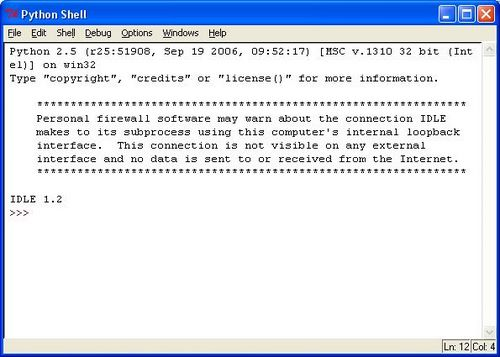
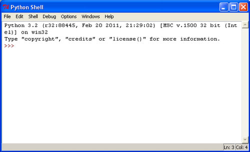

IDLE (Python GUI)


První editor, po kterém absolutní začátečníci asi sáhnou, protože se dodává přímo s distribucí Pythona. V Pythonu 3.2 je ve verzi 3.2, v 2.5 je ve verzi 1.2. Na začátečnické programování dostačující a pěkný editor.
 Výhody
- dodává se s Pythonem
- programy se po spuštění samy nezavírají: InstalaceWindows - Černé okno hned zmizí!
- barevná syntaxe
- vyhledává text v několika souborech najednou
- automatické dokončování (nejsou tam však klíčová slova)
- zobrazení související závorky
- pro pokročilejší snad debugger
Nevýhody
- není česky
První použití
Po startu máte před sebou pythonovský prompt v bílém, kde si můžete přímo zkoušet příkazy. Vyzkoušejte:
>>> 1+1 2 >>> jmeno="Python" >>> print (jmeno) Python >>> import os >>> os.curdir '.' >>> import time >>> time.time() 1203920214.5929999 >>>
Chcete-li psát program, použijte File - New Window nebo Open Window. Chcete-li program spustit, stiskněte F5. Po shlédnutí výsledku, můžete pokračovat na pythonovském promptu nebo se vrátit do svého programu klepnutím na ikonu na liště.
Chcete-li nápovědu (anglicky), stiskněte F1.
Výhodné nastavení
Option - Configure IDLE - General:
At Startup: Open Shell Window
At Start of Run: No prompt - aby vás to při spouštění programů neotravovalo
Initial Window Size: 30 - pokud se vám okno přis spouštění nevleze na obrazovku
Default source encoding: snad UTF-8